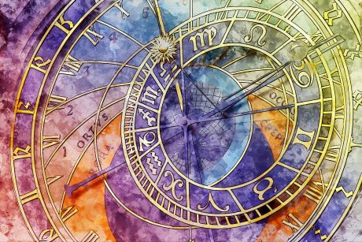

This article (Astrology & Astronomy) was written for the wonderful Ephemeris.Co – we work together to bring the magic of Astrology to your world :
Astronomy, put simply, is the study of the physical, celestial objects beyond the earth's atmosphere from a scientific point of view. Astrology, on the other hands, is how these celestial objects affect us here on earth in a symbolic, archetypal sense.
Makes sense to marry the two, right? Right.
We just can't look at the stars a planet in their physicality without adding the spiritual and the unseen. That would be like saying we are humans without a soul!
The Glory of Astrology – Back In The Day
At one stage in the world, Astrologers were also physicians, mathematicians and advisors – it was at that time that Galileo and Kepler were celebrated as the wisest and most learned guys out there.
And in that time, Astronomy was secondary to Astrology – a servant, so to speak.
As we can see, back in the day, it was unheard of not to have both Astrology and Astronomy sit on the same throne. King and Queen just didn't go without their trusty sky-gazers and they were held amongst the highest in the courts of old.
In ancient Babylon, it was the sky watchers that learnt to track the movements of the planets amongst the fixed stars, and to note the correlating events here on Earth. In fact, these ancient people were the ones that initially developed Astronomy along with Astrology as one marriage.
Later on, Ptolemy – known as the "grandfather of Astrology" wrote a definitive book called Tetrabiblios, which outlines that the science of celestial bodies had two faces: their actual position in space, and their influence on earth.
Later, the ancient Arabs adopted Astrology, Astronomy and Mathematics and blended these brainy arts into one, of which many methods that were birthed are still used today.
So, what went wrong? Why did they ever get separated – and what's the deal with modern Astronomers hating Astrologers?
Who's To Blame?
Sadly, modern science disagreed. Astrology, for most, has been relegated to a pseudoscience at best, and hocus-pocus at worst. However, it was only up until the latter stages of the scientific revolution that Astrology was separated from Astronomy.
The Age of Reason, in other words, destroyed this once -revered and ancient blend. Most scientists that you speak to are likely to either laugh in the face of astrology, or dismiss the community as wishy-washy and airy-fairy.
However, the Age of Reason wasn't the only instigator. As you may have already guessed, the Church had a part to play in the tragic separation. Because Astrology became known as "too deterministic" (in other words, too powerful) and seemed to be something that people trusted in beyond the authority of the Church, the Church decided to change the narrative.
It was put out that Astrology was no deterministic in any way, but only indicative and that we, as human beings, had total free will in changing the future. And for some, this sits well and feels comfortable, and perhaps was a needed change. But it got taken too far, and these days, there really is a lot of wishy-washy stuff out there that nobody respects, astrologically speaking.
The truth is, though, that we cannot separate the two.
Science cannot explain everything. neither can religion.
However, the final nail in the coffin was the shift in philosophies. Aristotle's "As Above, so Below" had been the guiding philosophy for many years, birthing incredible results. However, as modern philosophy took hold, the micro-macrocosm theory was thrown out and replaced with reason.
And that, friends, led to the decline and separation of the once-celebrated mirrors of the same coin. However, today Astrology is once again on the rise, as science has realised that not everything can be explained.
The efforts of ancient astrologers, in the medical Astrology field, in astro-meteoro logy (the study of weather) and mundane (political and world) Astrology, has slowly helped to give Astrology back some of the gravitas and respect that it deserves.
The problem today, really lies with the collection of ungrounded, uneducated folks practicing Astrology willy-nilly, which can lead to a loss of respect for the field.
The Tropical & Sidereal Zodiac
Now, time to throw a spanner in the works. Anyone worth their salt when it comes to the real stuff of Astrology knows that here are two zodiacs we follow in this world.
The Tropical and the Sidereal.
Sidereal Astrology is practiced in the east and is still used today. This is the Astrology of the Stars, which uses the actual, physical constellations as the backdrop for the movement of the Sun, thus allowing for interpretation and predication.
But, did you know that western Astrology doesn't use the stars?
That's right – western Astrology – tropical Astrology – uses the Suns' seasons as a backdrop for the movement of the Sun.
This makes more sense for the philosophy of Aristotle, as his adage "As Above, so Below" can be more neatly applied, seeing as we on earth live, grow and die by the seasons. All life is governed by the seasons and the elements, so it makes more sense to use this method.
The Astrology of the stars – the sidereal zodiac – tends to make sense when we use it for far -reaching topics such as the Soul, Karma and other dense topics.
It's kind of like Astrology for the soul, and Astrology for the human. And both go hand in hand. Like astrology and astronomy.
Thus, Astronomy and Astrology have no war, no clash, no tension. Sidereal Astrology is so detailed and so ancient that even astronomers would be hard-pressed to find fault – at least technically.
This also removes the issue of a "13th sign". Using the tropical system, we no longer rely on the stars or worry about their shifting every few hundred years. The sidereal astrologers take the shifting of the celestial heavens (called the precession of the equinoxes) into account for all their workings-out.
Pretty neat, right?
There's Hope
Any astrologer always checks the heavens to see the alignment and movements of the planets. We then apply those movements to events here on earth personal or world-wide.
Hopefully, astronomers will soon catch up, too. And that time seems too far from now.